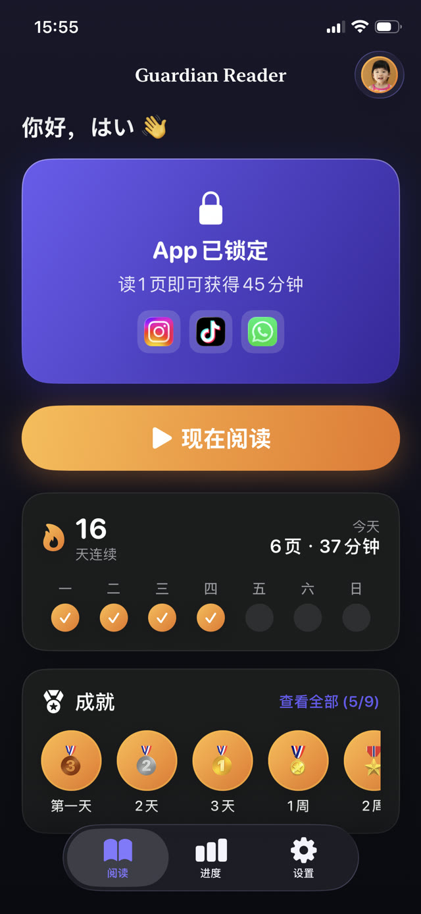
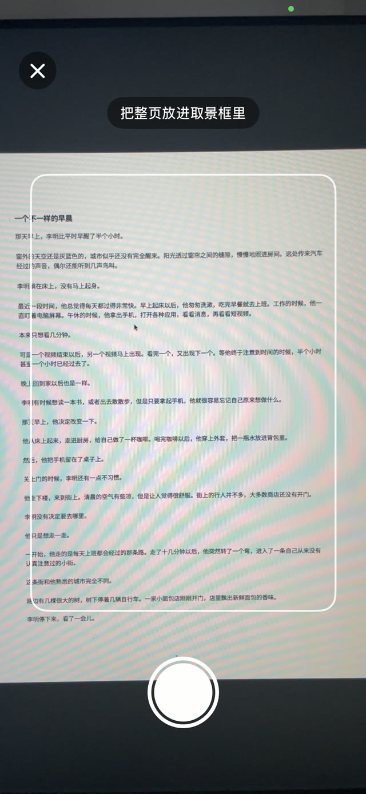
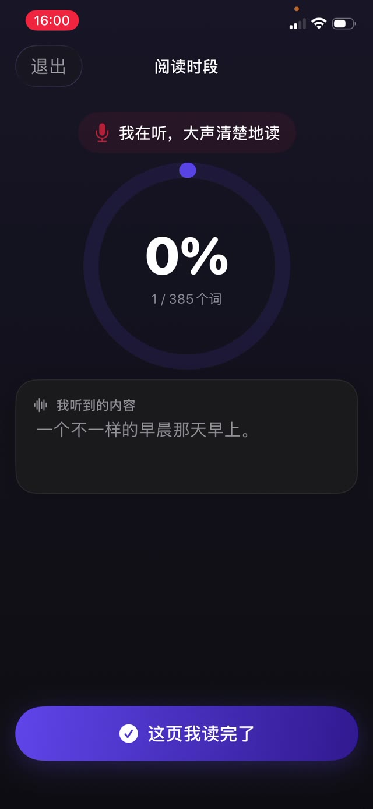
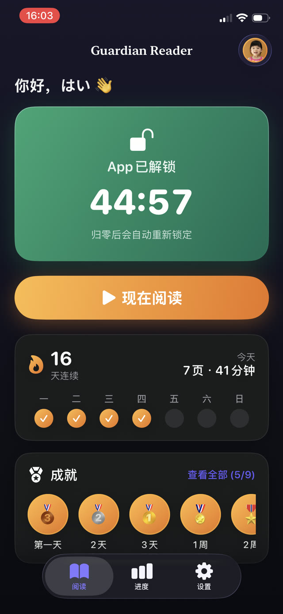
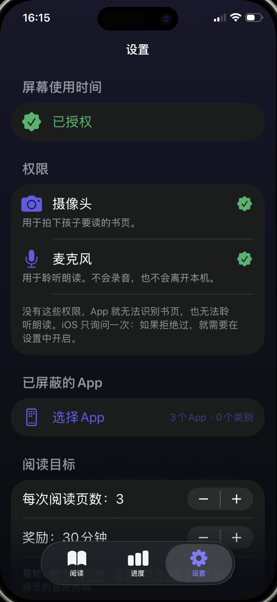
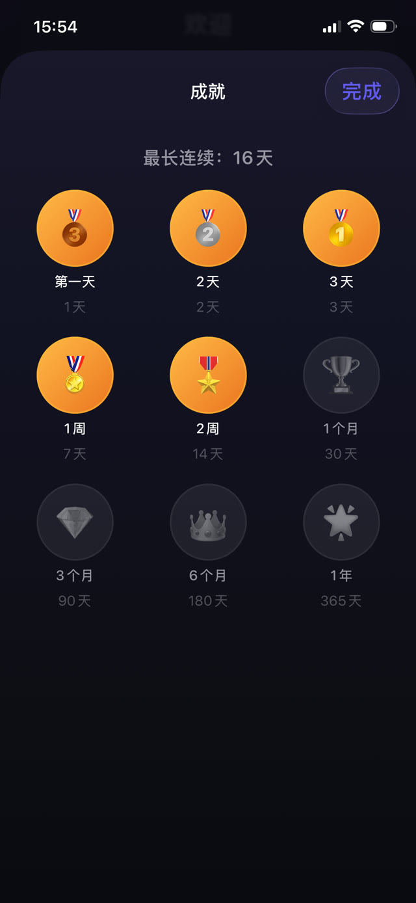
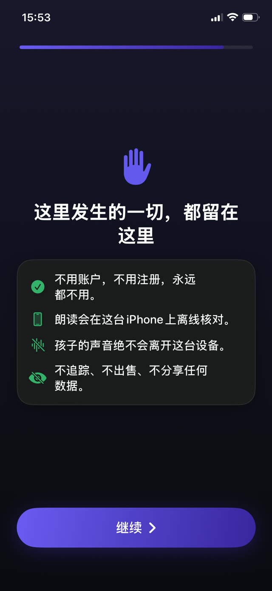

会听孩子朗读的家长控制。
Guardian Reader 会锁住你选择的 App。孩子朗读一本纸质书，iPhone 逐字核验，赚到的屏幕时间随之解锁。不需要你的意志力，也不需要孩子的。
免费 · 用于孩子的 iPhone，iOS 18 及以上 · 无需账号，不做追踪 · 支持 9 种语言


先阅读，再玩。
Guardian Reader 在孩子和 App 之间放上一本真书。朗读几页，逐字核验通过，屏幕就打开了。
iPhone · iOS 18 及以上 · 免费版：朗读核验 + 锁定一个 App · Premium 含 7 天免费
App 内部
读完之前，App 一直锁着。
家长控制和朗读教练合二为一。孩子自己就能操作，核验交给 iPhone。
实时核验
看它逐字核验的过程。
孩子朗读时，App 会把听到的内容与扫描的书页比对，匹配度实时上升。这是一次真实的朗读，一本纸质书读给 iPhone 听。认真读会远超及格线，说别的内容则接近于零。
朗读才是真正的练习 →

糊弄不过去
抓得住孩子真正会用的捷径。
没有可以猜的测验，也不靠自觉。说出的词会和扫描的那几页按顺序比对，所以略读、临场编造、口头声称读完都过不了。磕巴和小错误可以过：它看的是有没有读，不是读得完不完美。及格线的严格程度由一个滑块决定。
赚取屏幕时间的原理 →
奖励
朗读通过，手机解锁。
App 会按赚到的分钟数打开，倒计时清晰可见。归零后自动重新锁上，由 Apple 的屏幕使用时间强制执行，即使 Guardian Reader 已关闭也一样。
限制 YouTube 和 TikTok →
家长规则
兑换比例由你来定。
进去的是页数，出来的是分钟：4 到 6 岁一页约 15 分钟，青少年最多四页约 45 分钟。App 会按年龄给出起点建议，每一个数值都能在家长 PIN 之后修改，这个 PIN 与设备密码是分开的。
能坚持下去的屏幕时间规则 →
进度与连续天数
让他们愿意回来的奖章。
给孩子的是连续天数、星星和奖章；给你的是每日、每月、每年的页数。Premium 还会生成每次朗读的 PDF 报告：日期、分钟、匹配度，以及实际读出的文字，可以直接交给老师。
给学校的阅读记录 →
从设计上就注重隐私
对着孩子的麦克风，必须给出交代。
摄像头识别书页，麦克风把朗读转成文字，两者都只在设备本机上运行。没有账号，没有服务器，没有分析，也没有第三方 SDK：声音从不离开这台 iPhone，全部功能都能离线使用。
阅读完整隐私政策 →How it works
四个步骤，没有商量的余地。
和孩子一起设置一次就行。之后这个约定会自己运转：界线在 App 里，而不在你的嗓门里。
锁定 App
选择要锁定的 App 或整个类别，比如 YouTube、TikTok 或游戏，并用家长 PIN 保护设置。
扫描书页
孩子把要读的那本真书的书页拍下来，一页一张。
朗读出来
连着读完，iPhone 在一旁聆听，把每个词与扫描到的文字比对。
屏幕时间解锁
朗读通过，App 按赚到的分钟数打开。归零后自动锁上。
Guides
难处都有对应的办法。
关于屏幕时间、锁定 App 和培养阅读兴趣的实用指南，以及 Guardian Reader 在每一件事上能帮上什么忙。
怎样让孩子读得更多
对更喜欢屏幕的孩子有效的七种做法，以及其中唯一不需要你消耗意志力的一种。
阅读指南 屏幕时间孩子如何用阅读赚取屏幕时间
把屏幕时间从理所当然变成需要赚取的东西，以及这条规则为什么不用你盯着也能维持。
阅读指南 家长控制在孩子的 iPhone 上锁定 App
Apple 的屏幕使用时间能做什么、不能做什么，孩子会找到哪些漏洞，以及怎样把它们彻底堵上。
阅读指南 YouTube · TikTok为孩子限制 YouTube 和 TikTok
为什么单靠时间限制赢不了无限信息流，以及应该在 App 前面放上什么。
阅读指南 阅读流畅度在家练习阅读流畅度
老师说的流畅度是什么意思，为什么朗读就是那个练习，以及怎样把十分钟塞进平常的一个晚上。
阅读指南 家庭规则真正能坚持下去的屏幕时间规则
为什么大多数家庭规则两周后就散了，以及活下来的那些规则共有的三个特点。
阅读指南FAQ